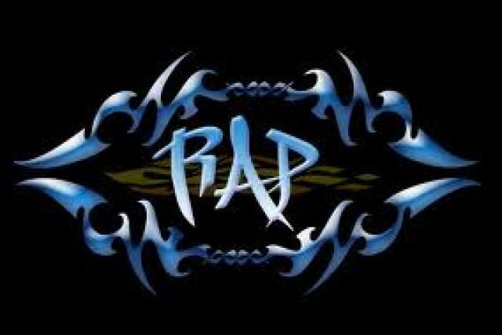

Rap

El rap es el elemento musical vocal principal de la cultura hip hop. La historia no ha empezado a decir que desde un principio era el MC el que presentaba y acompañaba al DJ, que era, realmente la estrella del espectáculo. Pero hoy en día, podríamos decir que casi siempre es el DJ el que acompaña al MC, y muchas veces ni aparece. Que el termino rap proviene del ingles, idioma en el que significa criticar severamente. También se ha sugerido que pudiera ser un acrónimo de la expresión en ingles rhythm and poetry (ritmo y poesía). Otros posibles acrónimos son "retinas afroamericana protestar" o "revolución afroamericana protestante”. Esto lo podemos encontrar en distintas páginas de nuestro internet.
Página
Portada